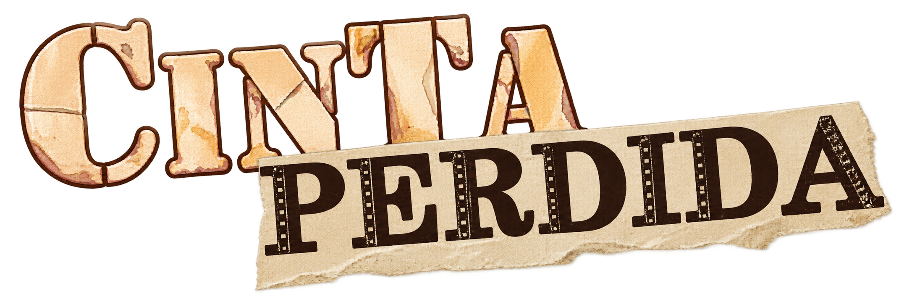
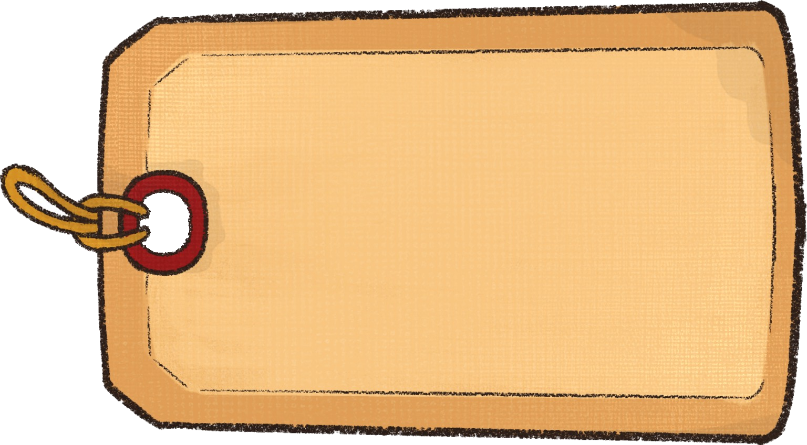

Primeras ideas
Conceptos iniciales, referencias y exploraciones del universo.


DETRÁSEste espacio reúne el material que dio forma a Cinta Perdida: desde las primeras ideas y bocetos hasta las pruebas visuales y las versiones finales.
Conceptos iniciales, referencias y exploraciones del universo.
Diseños preliminares de personajes, escenarios y elementos gráficos.
Comparación de alternativas y evolución de las láminas.
Material seleccionado para la presentación del proyecto.